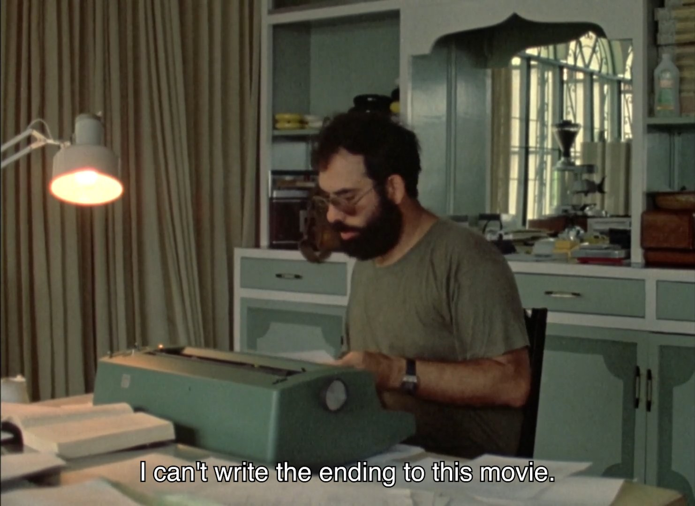

Tolga Recep Uçar
Graduate Research and Teaching Assistant
Mathematics, Koc University
Research interests:
Numerical analysis, numerical linear algebra,
physics-induced modeling.
Contact:
tucar24@ku.edu.tr
Home
Publications
Software
Thesis
Film theory
The Myth of Total Cinema
It Happened One Night
German Expressionism
Sergei Eisenstein
Orson Welles
Italian Neorealism
Alfred Hitchcock
French New Wave
Misc:
Camera as Ideology in 'The Zone of Interest (2023, Glazer)'
Disfunctional Imagery of 'Kinds of Kindness (2024, Lanthimos)'
The Embalmed Sorrow in 'Anora (2024, Baker)'
Quotes from 'Sculpting in Time' by Andrei Tarkovsky
